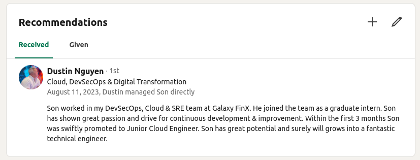

Tôi có kinh nghiệm thực tế trong việc triển khai và giám sát các ứng dụng và dịch vụ dựa trên đám mây. Thành thạo Python và Bash scripting, tôi có hiểu biết vững chắc về các khái niệm mạng và bảo mật. Chuyên môn của tôi bao gồm các công nghệ điện toán đám mây, tập trung vào AWS, Azure và Kubernetes (K8S) cho việc điều phối container.

Tôi mong muốn tham gia vào một công ty đầu tư vào sự phát triển của nhân viên với lộ trình sự nghiệp có cấu trúc và cơ hội học tập liên tục như đào tạo, hội thảo và chứng chỉ. Tôi đặc biệt đam mê tối ưu hóa các pipeline CI/CD để loại bỏ các điểm nghẽn và cải thiện hiệu quả.